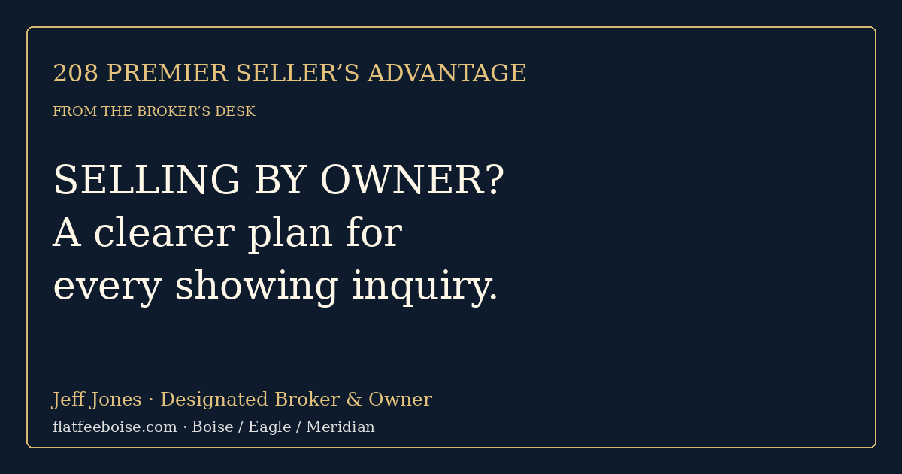

208 Premier Seller’s Advantage
From the Broker’s Desk

Selling by Owner? Turn Boise-Area Inquiries into an Organized Showing Plan
A message asking whether your Boise-area home is available is the beginning of a conversation, not a confirmed showing. If you are selling by owner, a consistent inquiry process can keep useful conversations moving while protecting your time and private information. The goal is not to make people jump through hoops. It is to make the next step clear.
This checklist is for sellers in Boise, Eagle, Meridian, and nearby Ada County communities. It works whether you are organizing appointments yourself or deciding which responsibilities you want a broker to handle. It is a workflow, not a guarantee of qualified demand or a sale.
Prepare one accurate property information sheet
Keep the current asking price, basic property description, available public listing link, and showing-contact method together. Note which information has been verified and what still needs confirmation. Do not improvise answers about boundaries, permitted work, utilities, or legal use when you do not know. Obtain the appropriate records or professional advice.
Use the same current information for every inquiry. When details change, update the sheet and the listing together. That prevents an old description or an outdated price from continuing to circulate after you have changed your plan.
Ask practical questions about the appointment
Ask the person’s name, best contact method, requested time, and whether an agent will accompany them. If there is an agent, establish the scheduling contact and confirm the appointment through a reliable channel. Ask only for information relevant to the transaction and apply your process consistently.
A financing conversation can help establish the intended transaction path. A preapproval or proof-of-funds document is not a guarantee of closing, and sensitive account details should be redacted or handled through an appropriate professional. Do not ask someone to send you full bank statements or account passwords in an ordinary message.
Offer clear windows and a confirmation
Decide which showing windows work for your household and how much advance notice you need. Give a specific option when the requested time is unavailable. Send a confirmation stating the appointment time, expected attendance, and how changes should be communicated.
Keep access arrangements separate from the public listing. Do not post entry codes, alarm details, or your work schedule online. Have a practical plan for pets, valuables, documents, and any occupied areas. If a situation feels unsafe, pause the appointment and seek appropriate assistance rather than treating access as an obligation.
Keep an inquiry log that leads to action
A small spreadsheet is enough: inquiry date, source, contact, requested appointment, confirmation, completed tour, follow-up, and outcome. Do not collect unnecessary personal details. Distinguish a request from a completed visit and a general compliment from a written offer.
Follow up with a straightforward question: did the property meet the visitor’s needs, and is there a next step? Record specific property feedback without arguing with it. Several similar objections may identify an issue worth reviewing; one comment does not establish market value.
Know when the conversation becomes a transaction
An offer requires a different level of review from a showing request. Price, financing, contingencies, seller credits, deadlines, and closing arrangements need to be considered together. Avoid accepting important terms through an informal exchange without understanding the documents and obligations.
The Consumer Financial Protection Bureau’s Closing Disclosure explainer distinguishes seller credits from the purchase price and other settlement amounts. That is a useful reminder to evaluate the whole transaction. A closing professional’s final accounting is different from an early estimate, and the buyer-facing disclosure guidance is not a substitute for your own seller settlement review.
Decide which work you want to own
If appointments, marketing updates, negotiations, and contract-to-close coordination are consuming your week, compare the responsibilities included in a service proposal. Flat Fee Boise is a seller-focused service of 208 Premier Real Estate. The current site describes photography and 3D tours, MLS syndication, sign and lockbox tools, and transaction coordination. Confirm your property’s scope, fee, exclusions, and agreement before choosing a listing plan.
A listing fee is not every expense of selling. Other negotiated compensation, credits, title or escrow charges, loan payoff, and applicable adjustments can affect proceeds. Ask for an itemized estimate rather than assuming a flat fee means an all-inclusive closing total.
Request a seller-service scope
Bring your property address and the parts of selling you want help managing. Review the current Flat Fee Boise offer and ask Jeff for a written explanation of the proposed scope and costs.
Call Jeff · (208) 807-7789For the broader marketing diagnosis, read why listing views may not become showings.
Evidence and scope
Sources checked October 29, 2026: BRR September 2026 report, published October 9; BRR methodology, which explains that reports support general market analysis and do not represent every transaction; CFPB Closing Disclosure explainer, for the distinction between seller credits and settlement costs. The workflow recommendations are Jeff Jones’s professional guidance, not measured local conversion statistics. No sale, timing, price, or marketing result is guaranteed.